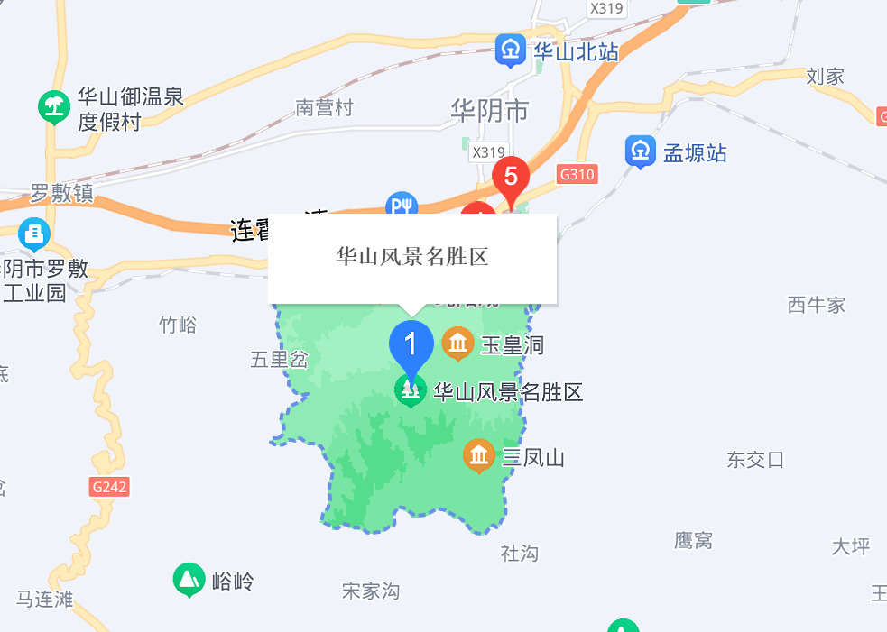

|
首页 | 风景 | 天气 | 注册 | 查询 | 留言 |
| 欢迎来到险峻华山！ |
| 走进华山 | ||||
|  | ||||
| 华山简介 | 地理位置 | 气候特征 | ||
| 华山，古称“西岳”，雅称“太华山”，为中国著名的五岳之一，中华文明的发祥地，“中华”和“华夏”之“华”，就源于华山。位于陕西省渭南市华阴市，在省会西安以东120千米处。南接秦岭，北瞰黄渭，自古以来就有“奇险天下第一山”的说法。华山是第一批国家重点风景名胜区，国家AAAAA级旅游景区，全国重点文物保护单位，国家地质公园。 | 华山位于陕西省华阴市境内，处于东经109°57′—110°05′，北纬34°25′—34°00′之间。东西长15千米，南北宽10千米，总面积约148平方千米。华山山脉是深成侵入岩体的花岗岩浑然巨石，顶部是粗粒斑状花岗岩；中部是中粒花岗河长岩及片麻状花岗岩。东、西、南三峰呈鼎形相依，为华山主峰。中峰、北峰相辅，周围各小峰环卫而立。 | 华山远离海洋，处于西风带北纬30°—60°之间，大陆度为53°7′，属于暖温带大陆性季风气候。由于山体挺拔陡峭，山麓和山顶峰的垂直温度梯度（或称温度直减率）：北麓从县城到峰顶，海拔高度每升高100米，减华山云量有明显的规律性。夏季白天云量最多，云层通常随高度而增厚，上升气流。中午最盛，最少云量发生在早晨。 | ||